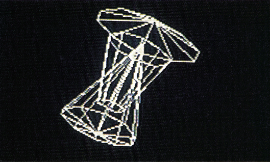
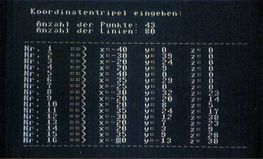
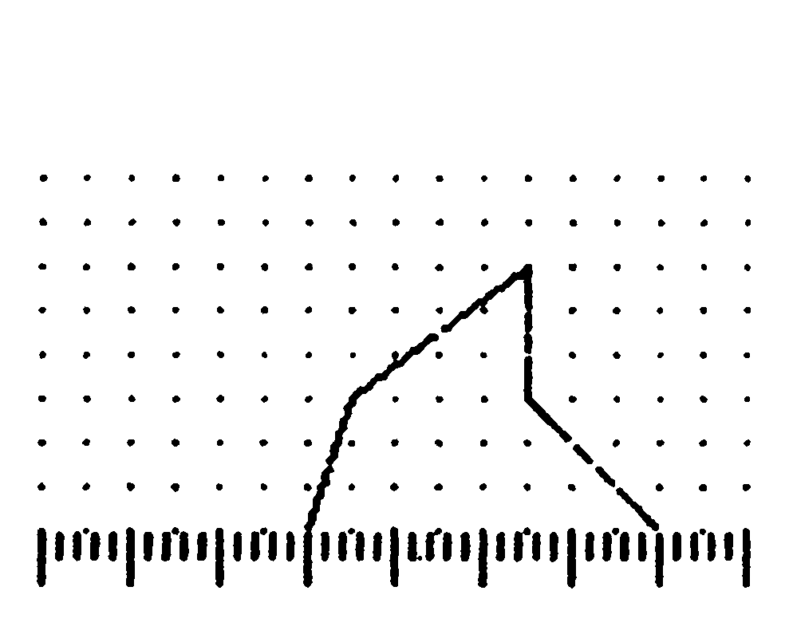
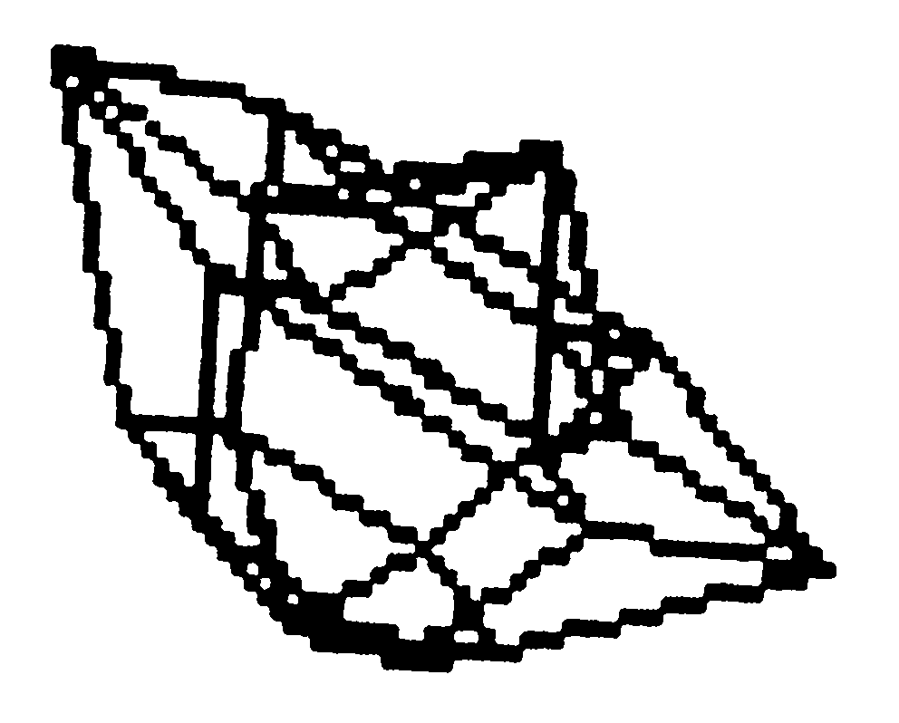
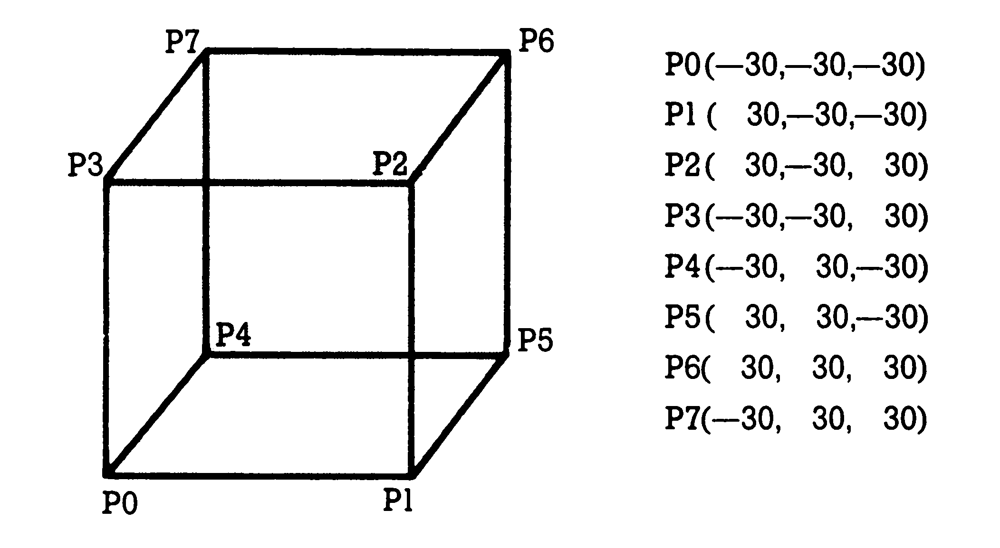

3D-Grafik in Echtzeit
Endlich können Sie dreidimensionale Körper komfortabel eingeben und ohne jeglichen Rechenaufwand auf dem Bildschirm darstellen. Jeder Körper läßt sich in Echtzeit manuell oder automatisch in jede beliebige Richtung und jede Achse drehen.
Eine der gefragtesten Anwendungen mit dem Computer ist wohl das Arbeiten mit der hochauflösenden Grafik. Sei es nun, um sich künstlerisch mit farbigen Malprogrammen (Koala-Painter oder Paint Magic) zu betätigen oder sich Konstruktionszeichnungen mit geeigneten Zeichenprogrammen (Hi-Eddi, StarPainter oder Profi-Painter) zu erstellen. Doch auch die räumliche Darstellung dreidimensionaler Körper ist mit der geeigneten Software (zum Beispiel Giga-CAD) kein Problem.
Doch damit lassen sich 3D-Grafiken leider nur aus einem bestimmten Blickwinkel betrachten. Um einen Körper um eine Achse zu drehen, ist ein enormer Speicherplatz- und Rechenaufwand nötig, der sehr zeitaufwendig werden kann und den auch nicht jedes Programm beherrscht. Hier nun greift »3D-Grafik-Master« ein.
Das Programm ermöglicht es, Körperdrehungen um beliebige Achsen fast in Echtzeit zu berechnen und anzuzeigen. Die Darstellung wird nur durch die Menge der im Körper enthaltenen Eckpunkte und Begrenzungslinien gebremst. Je weniger Linien zu zeichnen sind, desto schneller wird die Drehung. Bei bis zu etwa 40 Linien ist eine Rotation in Echtzeit möglich. Damit lassen sich bereits komplexe Körper darstellen (der Körper in Bild 1 ist beispielsweise aus 43 Punkten und 80 Linien aufgebaut).
Somit ist 3D-Grafik-Master (der sich übrigens auch in eigene Programme einbinden läßt) sehr gut geeignet, um das räumliche Erkennungsvermögen und die Vorstellungskraft zu schulen und zu unterstützen. Ein Beispiel dafür wäre etwa der Einsatz in der Schule, wenn es darum geht, im Zeichenunterricht plastische Körper den Schülern verständlich darzustellen. Doch auch für das eigene Vorstellungsvermögen ist es eine wertvolle Stütze.
Schulung des Vorstellungsvermögens
Das Programm benutzt zur Darstellung das Drahtgittermodell (Bild 1). Aus Geschwindigkeitsgründen wurde auf eine Möglichkeit zum Verbergen verdeckter Kanten (Hidden-Line) verzichtet, da die Routinen sonst in ihrer Verarbeitungsgeschwindigkeit sehr stark verlangsamt würden. Der Autor arbeitet jedoch an einer langsamen Version, die verdeckte Kanten nicht zeichnet.

Nach der Eingabe der Körper, die über direktes Zeichnen im Raum bis zur Eingabe über Koordinaten reicht (Bild 2), baut das Programm innerhalb kürzester Zeit die nötigen Verbindungen im Speicher auf. Gleich danach kann der fertige Körper dreidimensional dargestellt werden. Es ist außerdem jederzeit möglich, bestehende Verbindungen und Punkte zu löschen oder neue hinzuzufügen. Der zeitliche Aufwand dafür belastet den Anwender nur sehr gering, so daß ein effektives und schnelles Arbeiten mit dem 3D-Grafik-Master möglich ist.

Einmal damit gearbeitet, werden Sie nicht so schnell die Freude an diesem gelungenen Programm verlieren.
(Jesko Schwarzer/dm)3D-Grafik in Echtzeit
Dreidimensionale, plastische Körper aus jedem beliebigen Blickwinkel betrachten und sogar um jede mögliche Achse drehen — dies alles ermöglicht »3D-Grafik-Master«. Wenn's sein muß, auch in Echtzeit.
Eine beliebte Anwendung auf dem Computer ist das Arbeiten mit hochauflösender Grafik. Wenn dabei noch ein effektiver Nutzen entsteht, kann der Computer durchaus arbeitsentlastend eingesetzt werden. Das Programm »3D-Grafik-Master« dient vor allem der Schulung und Erkennung räumlicher Gebilde, ist also zum Beispiel im Zeichenunterricht in Schulen hervorragend einsetzbar. Es ist ein Leichtes, sich dreidimensionale Körper plastisch vorstellen zu können, da ein solcher Körper aus jedem beliebigen Blickwinkel betrachtet werden kann. Außerdem erfolgt die Drehung des Körpers um die einzelnen Achsen fast in Echtzeit, wodurch eine ruckfreie Bewegung entsteht.
Nach dem Start des Programms mit
LOAD"3D-GRAFIK-MASTER",8: RUN
stehen nach dem Laden der einzelnen Programmteile und einer Initialisierungszeit von etwa 50 Sekunden (Aufbau einer Tabelle) folgende Menüpunkte zur Auswahl, die sich entweder mit den Cursortasten oder durch direkte Anwahl mit den Zifferntasten <1> bis <8> ansprechen lassen:
<1> Eingeben als 3D-Zeichnung
Dieser Punkt dient zum Eingeben eines dreidimensionalen Körpers. Sollte vorher bereits ein Körper im Speicher existieren, wird dieser zuerst vom Programm gezeichnet. Damit ist es möglich, neue Verbindungen an bereits existierenden Körpern anzubringen.
Mit den Tasten <X>, <Y>, <Z>, <SHIFT+X>, <SHIFT +Y>, <SHIFT+Z> und den beiden Cursor-Tasten kann nun eine Linie frei im Raum bewegt werden. <RETURN> übernimmt die gezeichnete Linie in den Speicher. <SHIFT+ CLR/HOME> löscht das Bild, <CLR/HOME> positioniert den Grafik-Cursor auf den Koordinatennullpunkt. Durch Drücken der <*>-Taste kann der sich bewegende Endpunkt der Linie gewechselt werden. Auf Wunsch blendet <K> ein Koordinatenkreuz in die Grafik ein oder aus. <L> setzt den Grafik-Cursor auf den zuletzt mit <RETURN> übernommenen Punkt. <P> vereinigt Anfangs- und Endpunkt der Linie miteinander in der aktuellen Position des Grafik-Cursors (ab hier startet eine neue Linie). Mit der Taste <A> läßt sich die X-, Y und Z-Koordinate des Grafik-Cursors abfragen. Der Grafik-Cursor bewegt sich in Schritten, die jeweils einen Abstand von fünf Bildpunkten haben. Eine Änderung ist mit den Tasten <0> bis <9> möglich, wobei <0> einer Schrittweite von 10 Pixel (Bildschirmpunkten) entspricht.
Mit den Tasten <+> und <—> wird der Sichtwinkel, unter dem der Körper erscheint, verändert.
Ist der Körper fertig gezeichnet, erfolgt die Rückkehr zum Hauptmenü mit <←> oder <M>.
<2> Eingeben als Koordinatentripel
Hier kann die Eingabe der Koordinaten eines Körpers in numerischer Form erfolgen. Die Koordinaten dürfen Werte von —40 bis +40 annehmen. Eine Überprüfung findet im Programm statt. <CLR/HOME> setzt den Grafik-Cursor in die erste Spalte der ersten Zeile, <SHIFT+CLR/HOME> löscht den Speicher. Mit <CRSR>-unten kann der Speicher durchgeblättert werden, wenn sich der Cursor in der untersten Bildschirmzeile befindet. Sollte sich der Cursor in der Zeile befinden, in der der letzte Punkt angezeigt wird, läßt sich der Punktespeicher mit <RETURN> um einen Punkt erweitern und neue Koordinaten können eingegeben werden. Die maximale Anzahl einzugebender Punkte und Verbindungslinien beträgt jeweils 255.
<SHIFT+INST/DEL > schafft ebenfalls Platz für einen weiteren Punkt, <INST/DEL> löscht einen Punkt. Ist ein zu löschender Punkt mit einem anderen Punkt durch eine Linie verbunden, läßt sich dieser Punkt nicht löschen!
Mit <F7> gelangt man in den Linien-Eingabemodus. Hier gibt man die Punktenummern des Anfangs- wie auch des Endpunktes ein. <SHIFT+INST/DEL> schafft Platz für eine neue Verbindungslinie, <INST/DEL> löscht eine Verbindungslinie.
Mit <F7> gelangt man wieder in den Punkte-Eingabemodus. Von hier aus kann auch wieder mit <←> oder <M> in das Hauptmenü zurückgesprungen werden.
<3> Eingeben von Rotationskörpern
Nach der Anwahl dieses Menüpunkts wird man gefragt, ob die Koordinaten eines möglicherweise im Speicher stehenden Körpers gelöscht werden sollen. Beantwortet man diese Frage mit <N>, zeichnet das Programm den nächsten erstellten Körper zu dem bestehenden dazu. Nach Klärung dieser Frage erfolgt das Zeichnen eines 80 x 40 Punkte großen Eingabefeldes. Das Programm erstellt nun innerhalb dieses Eingabefeldes eine Hilfsmaske (Bild 1) mit einem Punktabstand von fünf Pixel.

Innerhalb dieses Eingabefeldes kann nun eine Konturenlinie des Körpers erstellt werden, die um eine Drehachse (hier das Maßband) gedreht wird (Bild 1). Wie oft dies zu geschehen hat, ist nach Abschluß des Konturenlinienzeichnens anzugeben. Das Programm verbindet anschließend die entsprechenden Knickpunkte der gedrehten Konturenlinie miteinander, so daß ein geschlossener Körper entsteht (Bild 2).

Das Eingeben der Konturenlinie geschieht mit den Tasten <X>, <Y>, <CRSR>-hoch/unten, <CRSR>-rechts/links, <RETURN>, <*>, <SHIFT+CLR/HOME>, <CLR/ HOME>, <L> und <P>. Mit <X> und <Y> sowie den Cursor-Tasten kann man den Grafik-Cursor bewegen. Die Übernahme einer Linie erfolgt mit <RETURN>. Durch Druck auf <*> kann der sich bewegende Punkt der Linie gewechselt werden. <SHIFT+ CLR/HOME > löscht das Eingabefeld und den Punktespeicher und baut das Eingabefeld wieder neu auf. <CLR/HOME> setzt den Grafik-Cursor auf den geometrischen Nullpunkt des Körpers, <L> setzt ihn auf den zuletzt übernommenen Punkt und <P> vereinigt Anfangs- und Endpunkt der Linie in der momentanen Position des Grafik-Cursors. Die Schrittweite läßt sich mit den Zahlentasten <0> bis <9> pixelweise verändern, wobei <0> einer Schrittweite von 10 Pixel entspricht. Ist die Konturenlinie fertiggestellt, beendet <SPACE> die Eingabe.
Nun fragt das Programm, bis zu welchem Winkel der Körper berechnet werden soll. Hierbei entsprechen 360 Grad einem kompletten Körper, 180 Grad wären genau ein halber Körper.
Das Programm wartet jetzt darauf, daß die Anzahl der Facetten eingegeben wird. Hier gilt: Je höher die Facettenzahl, desto runder erscheint der Körper, desto langsamer erfolgt aber dann auch die Drehung.
Soll zum Beispiel ein halbierter Körper entstehen, der sonst aber »rund« sein soll, so muß ein Winkel von 180 Grad und eine Facettenzahl von etwa 20 angegeben werden.
Ist alles korrekt, ist die Frage »Alles ok?« mit <RETURN> zu beantworten, ansonsten geben Sie bitte <N> ein.
Der Computer berechnet nun die einzelnen Teilstücke und Verbindungslinien der Figur. Danach kehrt das Programm automatisch in das Hauptmenü zurück.
<4>/<5> Koordinaten laden und speichern
In diesen Menüpunkten darf ein höchstens 13 Zeichen langer Name angegeben werden, an den das Programm noch ».3D« anhängt (dies dient der Wiedererkennung der einzelnen Dateien auf Diskette).
<6> Directory
Hier lassen sich alle sequentiellen Disketten-Files anzeigen, die als Datendateien (Name.3D) gekennzeichnet sind. Durch Druck auf eine beliebige Taste wird die Ausgabe angehalten. Nach der Anzeige aller berechtigten Dateien zeigt das Programm den Fehlerkanal des Diskettenlaufwerks an. Im Normalfall also »00,OK,00,00«. Ein weiterer Tastendruck führt zurück ins Hauptmenü.
<7> Drehen
Dies ist einer der letzten und wichtigsten Menüpunkte. Er erlaubt das Drehen einer 3D-Figur fast in Echtzeit (bei nicht zu vielen Linien; je mehr Linien, desto langsamer wird die Drehung).
Beim Start befindet man sich im »Demo-Modus«. Hier wird ein Körper um alle drei Achsen (X-, Y- und Z-Achse) gleichzeitig gedreht. Abschalten kann man die selbständige Drehung mit <E>. Mittels <X>, <Y> und <Z> beziehungsweise <SHIFT+X>, <SHIFT+Y> und <SHIFT+Z> läßt sich ein Körper von Hand in jede Lage drehen. <+> und <—> verändern dabei den Sichtwinkel (von 0 bis 92 Grad). Der Demo-Modus läßt sich durch Druck auf <D> erneut starten. Die Tastaturabfrage ist so gestaltet, daß auch alle Tasten gleichzeitig gedrückt werden dürfen. <RETURN> führt wieder zurück ins Hauptmenü.
<8> Exit
Zu diesem Punkt ist nicht viel zu sagen. Hiermit wird der Editor verlassen. Ein Warmstart ist mit GOTO 60030 möglich.
Eingabehinweise
Bitte geben Sie zuerst Listing 1 ein und speichern es unter dem Namen »3D-Grafik-Master«. Dies ist das spätere Ladeprogramm, das die anderen Teile automatisch nach dem Start mit RUN nachlädt.
Doch vor dem Start tippen Sie bitte noch die Listings 2 und 3 (beide mit dem MSE) sowie Listing 4 und 5 ein und speichern diese.
Listing 3 (»3D.SPRT«) enthält die Form des Cursorsprites. Sie kann beliebig verändert werden. Es ist nur darauf zu achten, daß die Figur auf die linke untere Ecke zeigt und die Anfangsadresse $5BC0 (26368) lautet. Das Listing 4 muß unter dem Namen »3D.EDIT« gespeichert werden.
Das Maschinenprogramm (Listing 2) läuft ohne weiteres auch ohne den Editor (Listing 4). Wie ein eigenes Programm aussieht, das mit Unterstützung von Listing 2 bewegte Grafiken darstellt, können Sie mit Hilfe des Demo-Programms (Listing 5) sehen.
Das Programm
Der Hauptteil des Programms ist sicher die Drehroutine. Sie dreht einen Körper und stellt ihn in Parallelprojektion dar. Dabei wird mit zwei Grafikbildschirmen gearbeitet. Der erste liegt bei $6000 (Farbspeicher bei $5C00) und der zweite bei $E000 (Farbspeicher im RAM unter dem I/O-Bereich ab $DC00).
Die LINE-Routine ist eine der schnellsten uns bekannten. Sie setzt nahezu 13000 Punkte pro Sekunde. Sollte der Sonderfall einer Horizontal- oder Vertikal-Linie eintreten, verzweigt das Programm zu noch schnelleren Unterroutinen. Nach dem Umschalten zwischen den Grafikbildschirmen wird der andere, nicht sichtbare Grafikbildschirm gelöscht (nur der Ausschnitt vom 64. Pixel bis zum 255. Pixel, da ausschließlich in diesem Bereich gezeichnet wird).
Koordinaten und Verbindungslinien
Jeder Punkt wird im Format X/Y/Z im RAM gespeichert. Hierbei liegen die X-Koordinaten ab $4C00 (19456), die Y-Werte ab $4D00 (19712) und die der Z-Punkte ab $4E00 (19968). Es können maximal 255 Punkte abgelegt werden. Die Anzahl steht in Speicherstelle 3. Ein Beispiel: Die Koordinaten eines Würfels (Bild 3):

Zu negativen Zahlen muß der Wert 256 addiert werden!
| 19456 | X | 19712 | Y | 19968 | Z |
|---|---|---|---|---|---|
| +0 | 226 | +0 | 226 | +0 | 226 |
| +1 | 30 | +1 | 226 | +1 | 226 |
| +2 | 30 | +2 | 226 | +2 | 30 |
| +3 | 226 | +3 | 226 | +3 | 30 |
| +4 | 226 | +4 | 30 | +4 | 226 |
| +5 | 30 | +5 | 30 | +5 | 226 |
| +6 | 30 | +6 | 30 | +6 | 30 |
| +7 | 226 | +7 | 30 | +7 | 30 |
Die Zahl der Punkte beträgt 8, also POKE 3,8
Die Verbindungsvorschrift liegt ab $5100 (20736) für den Startpunkt (PS) und ab $5200 (20992) für den Endpunkt (PE). Es wird dann beim späteren Drehen eine Linie von PS nach PE gezeichnet, wenn sich die entsprechenden Punktnummern in den Speicherzellen befinden. Zum Beispiel der Würfel aus Bild 3 von oben:
| Nr. | PS | PE | |
|---|---|---|---|
| 0 | 0 | 1 | Da 12 Linien gezeichnet werden sollen (0 bis 11), muß Speicherstelle 4 eine 12 enthalten. (POKE 4,12) |
| 1 | 1 | 2 | |
| 2 | 2 | 3 | |
| 3 | 3 | 0 | |
| 4 | 4 | 5 | |
| 5 | 5 | 6 | |
| 6 | 6 | 7 | |
| 7 | 7 | 4 | |
| 8 | 0 | 4 | |
| 9 | 1 | 5 | |
| 10 | 2 | 6 | |
| 11 | 3 | 7 |
Im RAM sieht das dann so aus:
| 20736 (PS) | Inhalt | 20992 (PE) | Inhalt |
|---|---|---|---|
| +0 | 0 | +0 | 1 |
| +1 | 1 | +1 | 2 |
| +2 | 2 | +2 | 3 |
| +3 | 3 | +3 | 0 |
| +4 | 4 | +4 | 5 |
| +5 | 5 | +5 | 6 |
| +6 | 6 | +6 | 7 |
| +7 | 7 | +7 | 4 |
| +8 | 0 | +8 | 4 |
| +9 | 1 | +9 | 5 |
| +10 | 2 | +10 | 6 |
| +11 | 3 | +11 | 7 |
Maschinenprogramm (Funktion)
Damit doppelt eingegebene Punkte nicht doppelt berechnet werden müssen, existiert eine Maschinenroutine, die die Koordinaten selbständig im Speicher ablegt und die Punktenummer an den Benutzer zurückgibt. Die Routine, die diese Aufgabe übernimmt, heißt PSEARCH und liegt ab $400C. Sie hat das Format »SYS 2↑14+12,X,Y,Z«.
X, Y und Z sind die Koordinaten eines jeden Punktes. Die Punktenummer wird in Speicherstelle 782 übergeben. Eine praktische Anwendung findet sie im Basic-Listing ab Zeile 30630. Die Adresse der PSEARCH-Routine ist in der Variablen SE gespeichert. Hier, im Rotationskörper-Berechnungsprogramm, kann es vorkommen, daß zwei Punkte gleiche Koordinaten haben. Um zu verhindern, daß unnötigerweise beide berechnet und gezeichnet werden, existiert diese Routine.
Ein ähnliches Programm existiert auch für Verbindungslinien. Damit keine Linie doppelt gezeichnet wird, können die Punktenummern der LSEARCH-Routine ab $400F (im Basic-Programm die Routine mit der Variablen VP) übergeben werden. Syntax: »SYS 2↑14+15,PS,PE«. Speicherzelle 4 (Anzahl der Linien) wird in jedem Fall angepaßt.
Sollte in eine bestehende Punktetabelle ein weiterer Punkt mit einer ganz bestimmten Punktnummer eingefügt werden, dann benutzt man die INSTP-Routine ab $401E. Sie schafft Platz für weitere Punkte durch: »SYS 2↑14+30,PN«. PN stellt die Nummer des einzusetzenden Punktes dar. Die Tabelle der Verbindungslinien wird dabei angepaßt. Das ist wichtig, da der Körper sonst nicht mehr korrekt gezeichnet werden kann.
Ab $4021 existiert noch die PDEL-Funktion. Sie entfernt einen Punkt aus dem Speicher, wenn dieser Punkt nicht mit einem anderen durch eine Linie verbunden ist. Das bedeutet im Klartext: Existiert in der PS- oder PE-Tabelle diese Punktnummer, wird der Punkt nicht gelöscht. Das Format lautet: »SYS 2↑14+33,PN«. Speicherzelle 3 paßt sich entsprechend an. Praktische Anwendung finden beide Routinen (PINST und PDEL) ab Zeile 20320 in Listing 4.
Verbindungslinien können mit der VINST-Routine ($4024) eingesetzt werden. Das Format: »SYS 2↑14+36,LN«. Speicherzelle 4 (Anzahl der Linien) paßt sich automatisch an.
Die VDEL-Routine ($4027) löscht Verbindungsroutinen. Format: »SYS 2↑14+39,LN«. Speicherstelle 4 wird automatisch erniedrigt. Das Basic-Listing benutzt beide Routinen ab Zeile 21620.
Sind alle Koordinaten im Speicher abgelegt und die Speicherstellen 3 und 4 richtig gesetzt, darf die Initialisierungs- ($4000) und dann die Drehroutine ($042A) aufgerufen werden. Die INIT-Routine überprüft, ob alle internen Tabellen aufgestellt wurden. Wenn nicht (erster Aufruf oder Speicherstelle 40960<>0), holt sie das nach. Sie schaltet die $E000-Grafik ein, löscht diese und setzt den Farbspeicher. Danach wird die LINE-Routine auf die richtige Grafikseite (page) bei $6000 gelenkt und ins Basic zurückgesprungen.
Die Drehroutine fragt die Tastatur ab, berechnet die Drehung, die 2D-Koordinaten für den Bildschirm und zeichnet die Figur, bis <RETURN> gedrückt wird. Zum Beispiel: »SYS 2↑14:SYS 2↑14 +42« — Siehe auch Zeile 60020 in Listing 4.
Sollte jemand Lust verspüren, den Körper zu speichern, muß erst die Speicherstelle 3 und dann 4 ausgelesen werden. Nun folgt das Senden der X-, Y- und Z-Koordinaten des ersten Punktes, danach die des zweiten und so weiter. Anschließend kommt die Verbindungsvorschrift. PS/PE der ersten Linie und so weiter, bis die in Speicherstelle 4 enthaltene Anzahl der Linien erreicht ist. Für die Besitzer eines Diskettenlaufwerks übernimmt die Routine ab $4018 das Speichern: »SYS 2↑14 +24,1,8,1,"NAME,S":CLOSE1«.
Für das Laden ist das Maschinenprogramm ab $401B zuständig: »SYS 2↑14 + 27,1,8,0,"NAME,S":CLOSE1«.
Besitzer eines (möglicherweise nicht kompatiblen) Schnelladers können dafür den Programmteil ab Zeile 40000 in Listing 4 verwenden.
Da im Editor auch Linien gezogen und Punkte gesetzt werden, müssen die Einsprünge für diese Routinen auch vorhanden sein:
$4012 — PLOT: »SYS 2↑14+18,X,Y« (2D-Koordinaten)
$4003 — LINE: »SYS 2↑14+3,X1,X2,Y1,Y2«
$4006 — INV: »SYS 2↑14+6« (Ein)
$4015 — NRM: »SYS 2↑14+21« (Aus)
Die Grafikbefehle beziehen sich auf die Grafik ab $6000, wenn vor der Benutzung »SYS 2↑14:POKE 65676,2« eingegeben wurde.
Eine OLD-Funktion ist auch noch vorhanden. Sie wird mit »SYS 2↑14+9« aufgerufen und rettet ein mit Reset oder NEW gelöschtes Programm.
Ein Tip noch am Rande:
Sollen Linien zwar gezeichnet, aber nicht gedreht werden, müssen diese Punkte (deren Koordinaten) in der Punktetabelle »hinten« liegen. Die Speicherstelle 3 gibt weiterhin die Anzahl der Punkte an, die gedreht werden sollen. Punkte, die weiter »hinten« in der Tabelle liegen, können zwar mit Linien verbunden werden, sind aber beim Drehen nicht relevant.
(Jesko Schwarzer/dm)